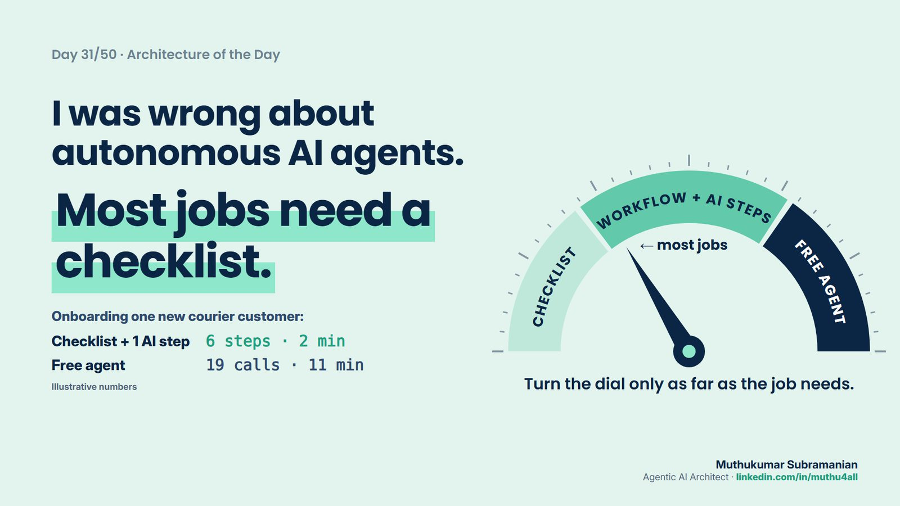
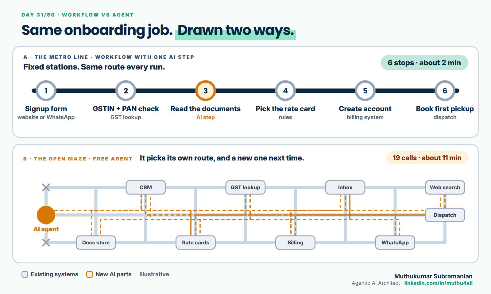
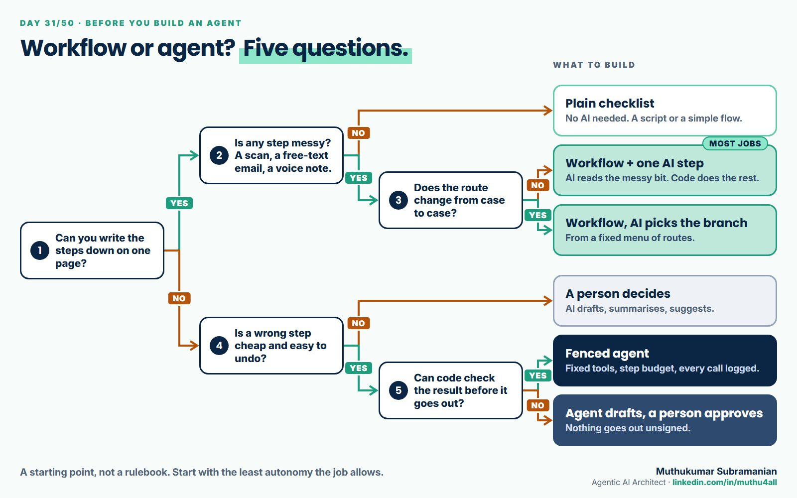
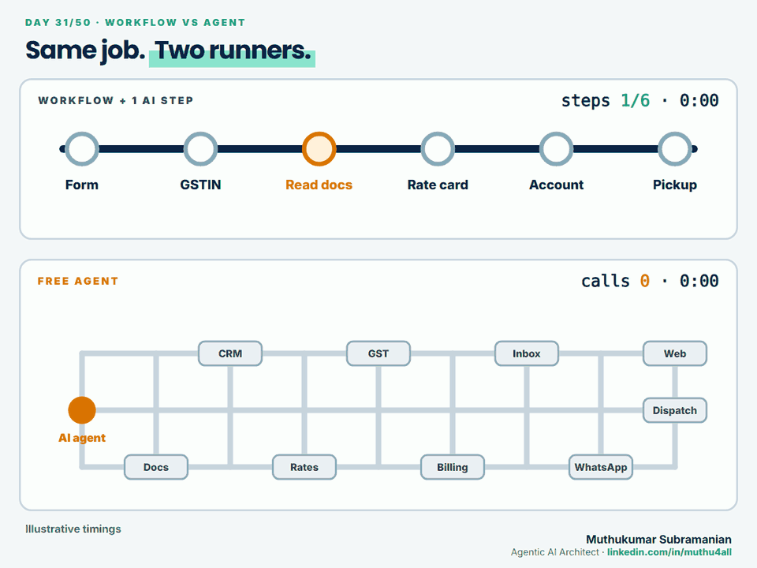

I Was Wrong About Autonomous AI Agents. Most Jobs Need a Checklist.
By Muthukumar Subramanian · Agentic AI Architect

A while ago, I was the person in the design review saying, "Don't hard-code the steps. Give the agent the goal and the tools. Let it figure out the route."
I believed it. I've been in IT for 25 years, at Infosys and then as a consultant and fractional executive, across everything from legacy systems to agentic AI. I've watched enough rigid systems break to fall in love with anything that adapts.
Then I watched the same job run a few hundred times.
The job was onboarding a new business customer at a courier company. Take the form, check the GSTIN, read the uploaded documents, pick a rate card, create the account, book the first pickup. Six steps. The person who did it by hand had them on a laminated sheet next to her monitor.
The free agent did get there. On one run it took 19 tool calls and about 11 minutes. On the next, a different route, a different number of calls, and once it stopped to search the web for something the CRM already had. A plain workflow with one AI step did the same job in six steps and about two minutes, the same way every time. (A composite of what I've seen. Every number here is illustrative.)
So here's my confession. Most jobs don't need an agent that decides. They need a checklist that never forgets, with AI in the one or two places where the input is messy.
The architecture today
There are two shapes, and most "AI agent" projects are one of them with the other's name on it.
→ A workflow: code decides the order of steps. AI may do the work inside a step, like reading a scanned document, but it doesn't choose what happens next.
→ An agent: the model decides the next step, which tool to call, and when it's done.
Anthropic's December 2024 guide, Building Effective Agents, draws the line the same way: workflows run through "predefined code paths", while agents "dynamically direct their own processes and tool usage". LangGraph's docs make the same split. And the guide's advice is the part I skipped: find "the simplest solution possible", and add complexity only when you need it.

It isn't a switch. It's a dial, with stops in between:
- Plain checklist. No AI. A script or a simple flow.
- Workflow with an AI step. AI reads the messy input; code does the rest.
- Workflow where AI picks the branch, from a fixed menu of routes.
- Fenced agent. It chooses its steps, but only from a short tool list, within a step budget, with every call logged.
- Free agent. It decides the route, the tools and when to stop.
I used to start at 5 and work backwards. Now I start at 1 and turn the dial only as far as the job needs.
Where AI plugs in now: one messy step
Take the checklist you already have, written or in someone's head, and find the one step where a person has to read something. At the courier firm, that's step 3. GST certificates come in as phone photos, address proofs in three formats, company names spelt two ways.
That's where AI earns its place. It reads the documents, pulls out the fields, matches them against the GSTIN record, and flags anything that doesn't match. Everything else stays plain code: the rate card is a rule, the account is an API call, the pickup is a booking.
You get most of the time saved, from a couple of days of back-and-forth to the same day, and none of the wandering. When something breaks, you know which station it broke at.
Where it's heading with agents: the exceptions
Agents do have a real job here. It's the cases that don't fit the line.
Maybe one onboarding in ten is odd: a seller with three warehouses, a GSTIN registered in another state, a pin code the courier doesn't serve yet. Today those land on a person's desk with a sticky note. That's where a fenced agent makes sense: it gets the case, a short list of tools, a step budget and a deadline, and it either resolves it or hands it back with what it found.
In two to three years, I expect most automation to look like this. A workflow is the spine, and agents are called at specific stations, for specific exceptions. n8n, Make, Zapier and Microsoft's Copilot Studio already sell agents and step-by-step flows side by side. The design question will stop being "workflow or agent?" and become "how far do I turn the dial at this step?"

Watch it work
Same job, two runners, side by side.

Pros of workflow-first
→ Predictable time and cost: six steps today, six steps tomorrow
→ Easy to test, explain and audit. Anyone can read a checklist
→ When it fails, it fails at a named step, not "somewhere in the reasoning"
Cons
→ Brittle when the world changes: a new document type breaks a station until someone updates it
→ The long tail of odd cases still lands on people
→ It can freeze a bad process. Automating a poor checklist just makes it fail faster
The hard parts
Agents demo better. A workflow looks boring in a boardroom; an agent that "figures it out" looks like the future. I've been the one doing that demo, and I've seen the budget follow the demo, not the job.
A lot of companies don't have the checklist. It lives in one experienced person's head. Writing it down is slow, unglamorous work, and it's most of the value.
The AI step drifts too. A model update can change how it reads a blurry certificate. One AI step still needs tests, a confidence threshold and a fallback to a person.
And the words are a mess. Some products sold as "agents" are workflows, and some "workflows" hide an agent inside one node. Ask which part decides the next step. That's the whole question.
Two newer roles fit here. A forward deployed engineer (FDE), someone who works inside the customer's team on their real systems, sits with the onboarding desk for a week and turns that laminated sheet into a workflow. An AgentOps Engineer, who runs agents in production the way SREs run services, watches step counts, retries and failure rates, and is the first to say "this agent should be a workflow". The titles are still settling. The work isn't new; it's newly urgent.
The opportunity
Who pays: companies with agent pilots stuck in pilot, and ops-heavy businesses (logistics, insurance claims, HR, lending) that need the work done the same way every time.
What it creates:
→ Autonomy audits: map every agent project to a dial setting, with a reason for each
→ Workflow-first automation audits: find the checklist, add one AI step, measure before and after
→ Agent-to-workflow rebuilds for pilots that are too slow, too costly or too unpredictable
→ Exception agents: fenced agents that only handle the cases the workflow can't
→ FDE-led rollouts for SMEs that run on WhatsApp, Tally and spreadsheets
India is well placed for this. The services firms and global capability centres in Chennai, Bengaluru and Hyderabad already know how to write runbooks. This is the same discipline, with a dial.
A checklist doesn't get bored. An agent doesn't need to be clever every time.
Tools to try
n8n (an AI Agent node beside plain nodes on one canvas) · Make (scenarios, plus Make AI Agents) · Zapier (Zaps, plus Zapier Agents) · LangGraph (you draw the graph and choose where the model decides) · Microsoft Power Automate and Copilot Studio agent flows (deterministic flows with AI actions inside). For reading: Anthropic's Building Effective Agents.
Your turn 👇
Your next automation: workflow or agent? One word.
Tag the person in your team who still keeps the real process on a sheet next to their monitor.
Day 31 of 50 · follow along. Tomorrow: Day 32 · The AI Agent Clicked One Row Too Low. 40 Patients Went to the Wrong Clinic.